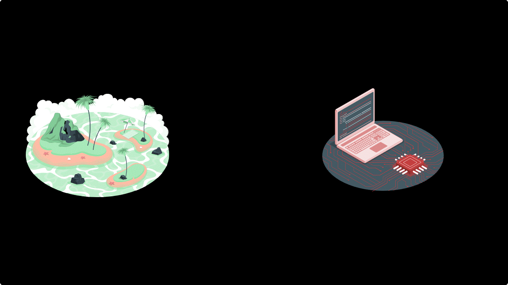
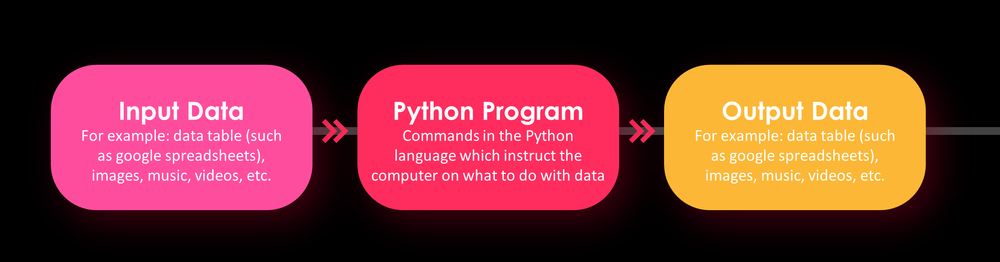

Introduction to Python#
Python Interpreter#
Today, we will go through the process of installing Python on your computer. Python is a versatile and powerful programming language widely used for various applications. Before we begin, let’s understand the concept of a Python interpreter (programm that we are going to install) and draw an analogy to real life.
A Python interpreter is like a translator between you and your computer. Imagine you’re in a foreign country, and you want to communicate with the locals. However, you don’t speak their language. So, you have a translator who understands both languages and can help you convey your thoughts effectively. Similarly, a Python interpreter translates the human-readable code you write into a language that your computer understands.
Installation Process#
Linux#
This section covers the process of installing Python on an Ubuntu system (a Linux distribution based on Debian). In most cases, Python is already pre-installed on Ubuntu by default.
To check whether Python is already installed on your system, run the following command in your terminal:
python --version
If the output of the command shows that the version of your Python starts with 3., then you are all set.
If you got an error or your version starts with ‘2’
In your terminal run the following command:
sudo apt update
You should now be able to install Python:
sudo apt install python3
Also, I recommend installing the program python-is-python3.
sudo apt install python-is-python3
Now, enter the command:
python --version
it should return version which starts from 3..
Windows#
Step 1: Downloading the Python installer#
Open your web browser and navigate to the official Python website: https://www.python.org/.
Go to Downloads tab.
I will install the default suggested Python version which in my case is Python 3.11.4.
Warning
In this course I will cover Python 3 version. As of now, Python 2 is no longer supported, so it’s recommended to choose the latest version of Python 3. Please make sure that you selected 3rd version as well.
Step 2: Starting the Installation#
Once the installer is downloaded, locate the file and run it.
Installation on Windows
Check the box that says “Add Python X.X to PATH” (X.X represents the version number). This option ensures that you can use Python from the command line.
Step 3: Completing the Installation#
Once the installation is complete, you’ll see a screen that says “Setup was successful.”
Installation on Windows
You can also opt to disable the path length limit by checking the box. This can be useful if you plan to work with deeply nested directories.
Verifying the Installation#
To ensure that Python is installed correctly, open a command prompt (Windows) or a terminal (macOS/Linux) and type
python --version
or
python3 --version
This should display the version of Python you installed.
Great job
Congratulations 🎉! You’ve successfully installed Python on your computer. Just like a translator facilitates communication between you and locals in a foreign land, the Python interpreter bridges the gap between your code and your computer’s understanding.
Programming philosophy#
I will share my point of view about programming and why it is worth learning a programming language. My perspective is based on analyzing and researching the real world.
Programming and computers can be considered useful tools that help us draw new laws and observations about world around us. By using programming, we can create representations of real-world objects.
The crucial step in this representation process is identifying and extracting important features that can be used to classify or analyze objects.
Now, let’s discuss why these tools are vital. Nowadays, we live in a technology-driven world where an enormous amount of data is generated every day. To analyze and extract meaningful insights from this data, programming plays a crucial role. Here are a few examples where manual analysis would be impossible or inefficient in terms of time spent.
Black hole image#
Here is the first image of a black hole:
{kind=link}
At first glance, it may seem funny, but the accumulated data for this project was mind-boggling. It equated to processing petabytes of information, which is an amount so vast that it could fill thousands of hard drives. Storing the data required to obtain this image took a lot of hard drives, weighing around 500kg. The total amount of data were around 5 petabytes of information. To give you an idea of how massive this data is, consider the following video: one small dot represents the size of the Ultra HD version of the movie Interstellar (which is around 100GB). Next, there is a representation of 5 petabytes of data, which was required to obtain the black hole image. Insane, isn’t it?
Multiplexed tissue image#
What impresses me a lot is that you can obtain the huge amount of data even when you are not focusing on astro images of the universe. For instance, you can obtain a lot of information while analyzing cell biology. Let’s take a look at multiplexed tissue images as an example. Here is an image of whole-slide human FFPE sample with 2.5 million cells, imaged on the PhenoCycler-Fusion System:

This technology allows for the capture of the expression of dozens of proteins. Typically, the size of tissue used in such experiments is around 1cm by 1cm. However, the generated raw data size for one experiment can easily exceed 1TB.
Of course, there may be examples that resonate more with your personal interests. For instance, text analysis, where ChatGPT can serve as an example, or image analysis and generation, where Stable Diffusion could be a good reference. All these examples would not be possible without programming.
Flow#
I want to emphasize once again that our main task is to learn a new language, just as you would learn Spanish, Japanese, etc. This language enables us to communicate with computers and instruct them to perform certain actions.
The general flow can be represented by the following scheme: we typically have input data, which can be in the form of tables (such as Google spreadsheets), images, music, etc. We then use commands in the Python language to instruct the computer on what to do with this data. After running these commands, we obtain output data, which can be in the form of spreadsheets, images, etc.
First Program#
Let’s jump in and write our first program in Python.
To start, we need to create a text file with our instructions for Python.
Let’s create a file named program.py.
Here, program is just a name that could be different, and .py is the file extension.
Next, we should specify our commands inside the file.
Let’s open the file in a text editor. I suggest to use the VS Code text editor since it is powerful and customizable.
But for today’s lesson it is enough to use just default notepad or another text editor app.
Now, let’s write the following command inside the file:
print("I'm Python. Nice to meet you!")
After writing the command, save the file and open a terminal or command line inside the current directory. Then, we should use the Python program with this file. In other words, we are asking the Python interpreter to translate our program into computer code and execute it.
python program.py
You should see the following string as output in your terminal or command line: "I'm Python. Nice to meet you!".
Great job
Congratulations 🎉! You have written your first Python program.
Let’s for a moment go back to the ‘flow’ chart that we saw previously.
In this example, we did not have any input data. However, we did have our script and output. To obtain some output, we utilized the built-in Python function print. The basic usage of this function is as follows: we write print and then, inside brackets, we specify the object or objects that should be printed to standard output.
Okay. In this example, we used some proper instructions that can be interpreted by Python. However, let’s see what happens when you use random statements that may not necessarily be interpreted by Python.
Let’s change the program.py file in the following way:
Python say Hello Python World
and execute it python program.py. As a result, we get an error message stating SyntaxError: invalid syntax. During the process of writing your own code, you will often see different types of errors. Typically, these errors indicate that Python cannot execute or understand the provided commands.
Now, let’s learn about the basic data types in Python and the ways to operate on them.